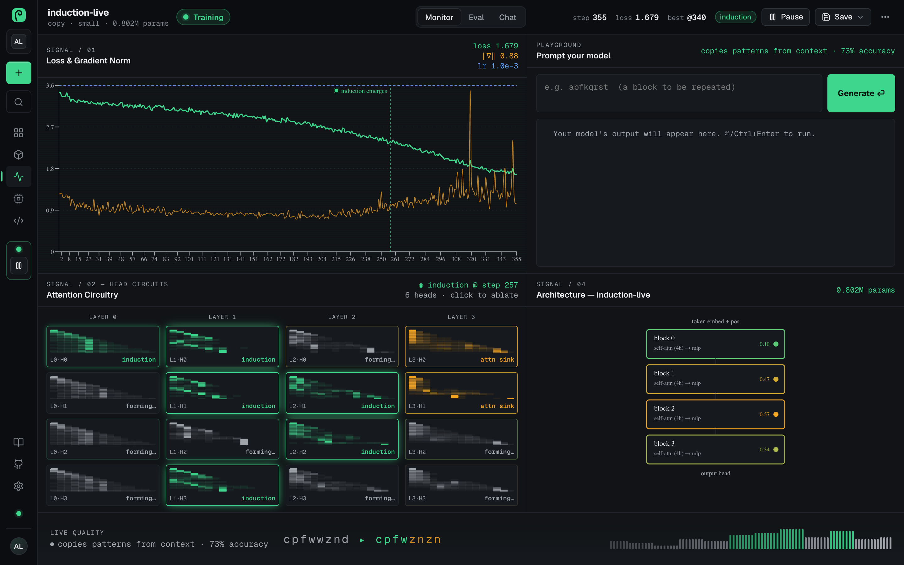

Open source · MIT · runs on your machine
Grow your own AI models. Watch them unfurl.
An open-source studio for training, fine-tuning and serving your own small AI models — with a live view inside the network while it learns.
- No GPU required
- Your data stays on your hardware
- Text, code, speech and vision
induction @ step 257
0.8M params · copy task
CPU · no GPU needed
Every model starts as noise
Most training tools hand you a progress bar and a loss number. Fiddlehead shows you what the model is learning while it learns: the loss and gradients streaming in, every attention head drawn and labelled by the behaviour it picks up, and induction circuits lighting up the moment in-context learning appears.
The name comes from the young fern frond: a tight spiral of random weights that slowly unfurls into something that understands.
How it works
From your data to a model you can call, in four steps.
-
Pick a recipe
Autocomplete in your own writing style, a chat assistant, code completion, a style mimic, speech-to-text, a custom voice or an image captioner.
-
Add your data
Paste text, drop in files and PDFs, point at a folder or URL, crawl a site, or read from S3, GCS, Google Drive or Dropbox. Validation text never leaks into training.
-
Watch it learn
Loss, gradients and every attention head stream in live. Prompt it mid-training, keep the best checkpoint, or rewind to any saved step.
-
Ship it as an API
Flip the endpoint switch, create a key, and call your model over HTTP from anywhere. Or download it as a
.zip.
The studio
A live instrument panel for one training run.
Every step streams in: the loss, the real gradient norm and the learning rate, with a marker where a capability emerges.

loss 1.679at step 355, and falling
induction @ step 2576 of 16 heads
73% accuracycopying patterns from context
- Playground, Eval and Chat. Prompt the model mid-training, run an eval suite as it learns, or hold a streaming conversation with temperature, top-p, top-k and a system prompt.
- Checkpoints. Keep the best evaluation, roll back to it, or rewind training to any saved step.
- Mixture of Experts. Sparse runs get an Experts view showing how the router spreads tokens across experts.
Attention circuitry
Watch every head find its job.
Each head is drawn live and labelled by the behaviour it picks up. When in-context learning forms, the induction heads light up.
Previous token
Looks one step back. The building block of reading in order.
Positional
Stays on its own token, holding position.
Attention sink
Parks its spare attention on the very first token.
Induction
Finds the last time this token appeared and looks at what came next:
[A][B] … [A] → [B].
Click any head to switch it off and watch the loss and the samples change — a live causal experiment.
Serve it
One switch turns a model into an API.
Save a model in the studio, switch its endpoint on in Models, create a key, and call it from anywhere.
curl http://localhost:8000/v1/my-model/generate \
-H "Authorization: Bearer sk-YOUR_KEY" \
-H "Content-Type: application/json" \
-d '{"prompt": "Once upon a time", "max_new_tokens": 80}'{ "model": "my-model", "prompt": "Once upon a time",
"text": "…", "latency_ms": 128 }Prefer no API server at all? Any saved model runs standalone: python serve.py my-model --port 8770
What you get
Small models, the whole workflow.
- 0
- GPUs needed to start. Training runs on your CPU, and uses an NVIDIA GPU automatically when there is one.
- 6
- open model families to fine-tune. GPT-2, DistilGPT-2, SmolLM, Pythia, Qwen2.5 and TinyLlama, with LoRA or a full fine-tune.
- 85M
- parameters at the XL size. Transformers trained from scratch are sized in plain words, from Tiny (0.15M) up.
- 4
- training strategies, picked by the planner. A single GPU, data-parallel (DDP), sharded (FSDP), or tensor + pipeline parallel.
Recipes for text, code, speech and vision
Whisper for speech-to-text, SpeechT5 with a HiFi-GAN vocoder for a custom voice, a ViT-GPT2 image captioner, and synthetic copy and sort tasks where circuits form visibly.
Production training knobs
Warmup with cosine, linear or constant schedules, gradient accumulation, fp32, bf16 or fp16, clipping, weight decay, label smoothing, early stopping, checkpoints, and LoRA rank, alpha and dropout.
Models, endpoints and keys
Every saved model shows its own training curve and quality. Serve it over HTTP, compare runs side by side, export a model card, or download weights and tokenizer as a
.zip.A planner for multi-GPU runs
Give it a model size and a GPU pool: it estimates memory, throughput, cost and wall time, writes the
torchruncommand, and can launch a real DDP test run.Accounts that hold up
Sign-in with Google and GitHub when configured, two-factor authentication with recovery codes, revocable devices, an audit log, and workspaces with roles and invitations.
Bring your own model
TelemetryHooksattaches to any PyTorch transformer that keeps its attention weights, so your own model gets the same live view. A native desktop app runs it all through Tauri.
Quickstart
Training on your laptop in a minute.
You need Python 3.10+ and Node 18+. Then open localhost:5173, create a local account and click Train the sample: a tiny model starts learning Hamlet's soliloquy on your machine.
git clone https://github.com/aniketshukla1/fiddlehead.git
cd fiddlehead
python3 -m venv .venv && source .venv/bin/activate
make setup
make devFine-tuning open models, speech, image captioning and PDF import use optional packages: pip install transformers peft accelerate soundfile librosa sentencepiece pillow pymupdf
Questions
Honest answers.
Do I need a GPU?
No. Training runs on the CPU and uses an NVIDIA GPU automatically when there is one. Larger base models and the bigger sizes want a GPU: run the engine on one and connect to it from the wizard.
How good are the models?
Models you train on a laptop in minutes are small. They're genuinely useful on focused data — your writing, a codebase, product names, an accent — and excellent for understanding how these models learn, but they aren't a replacement for frontier chat models.
Where does my data go?
Nowhere you don't send it. The engine, the API and the app all run on your own machine, and there is no Fiddlehead cloud. Data comes from your own files, or from the URL, site, S3, GCS, Google Drive or Dropbox location you point it at.
Can it fine-tune models I already use?
Yes: LoRA or full fine-tunes of GPT-2, DistilGPT-2, SmolLM, Pythia, Qwen2.5 and TinyLlama, Whisper for speech, SpeechT5 for voice and a ViT-GPT2 captioner for images. Install the optional packages first.
Can I watch my own model code?
Yes. hooks.TelemetryHooks attaches to any PyTorch transformer whose attention modules keep their softmax weights in last_attn_weights — a one-line addition to most implementations.
What does it cost?
Nothing. Fiddlehead is MIT licensed, and self-hosted installs have no plans or credit limits.